Publications

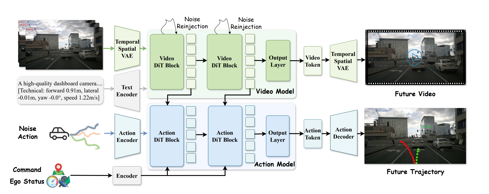
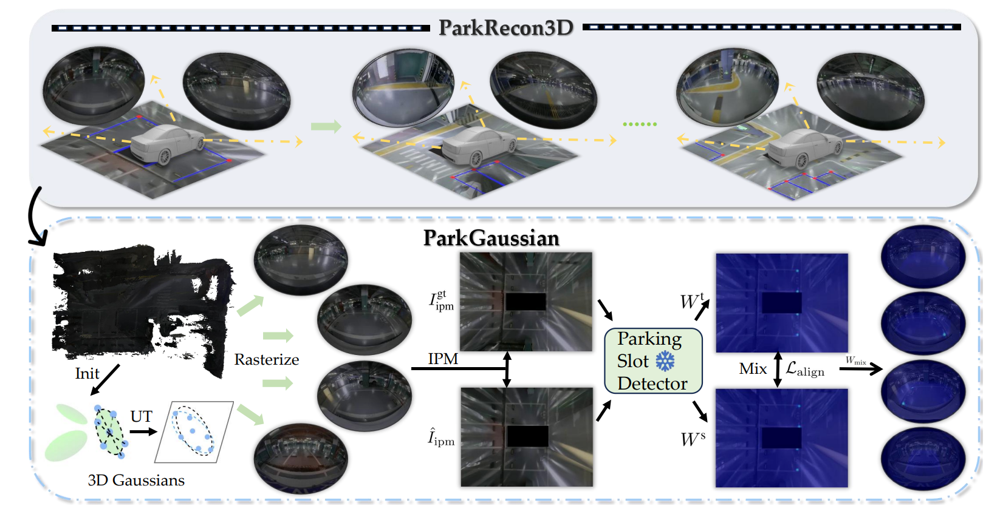
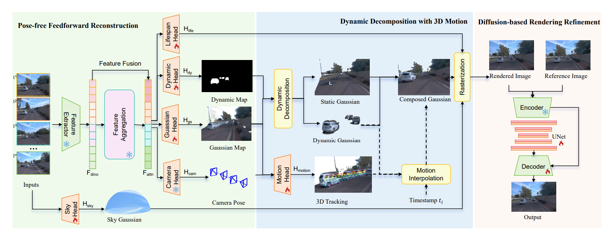
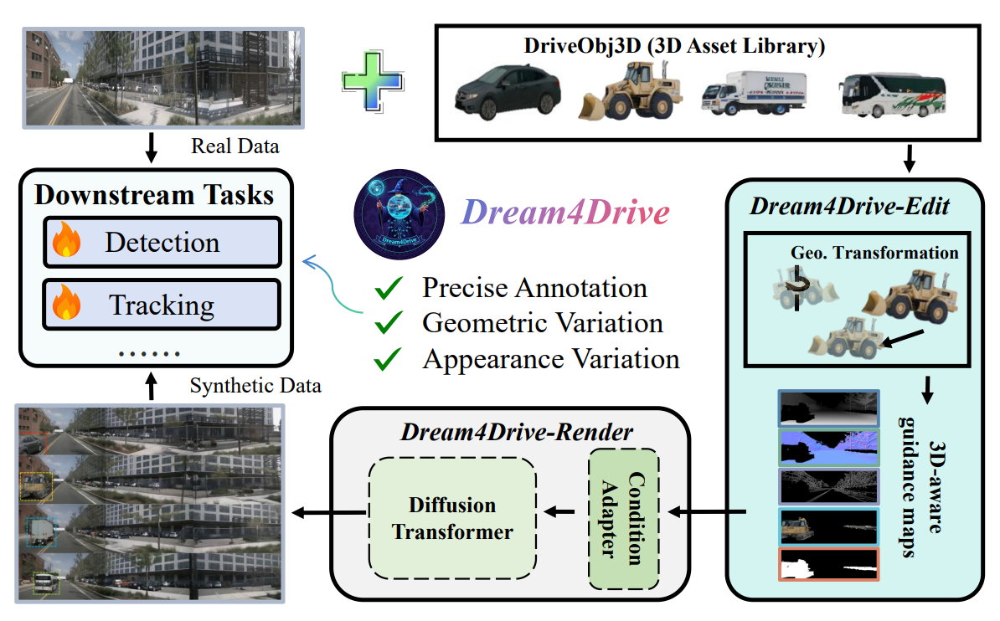
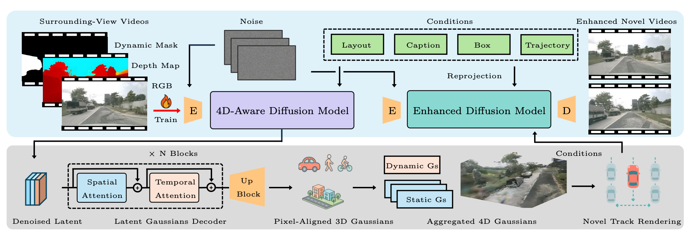
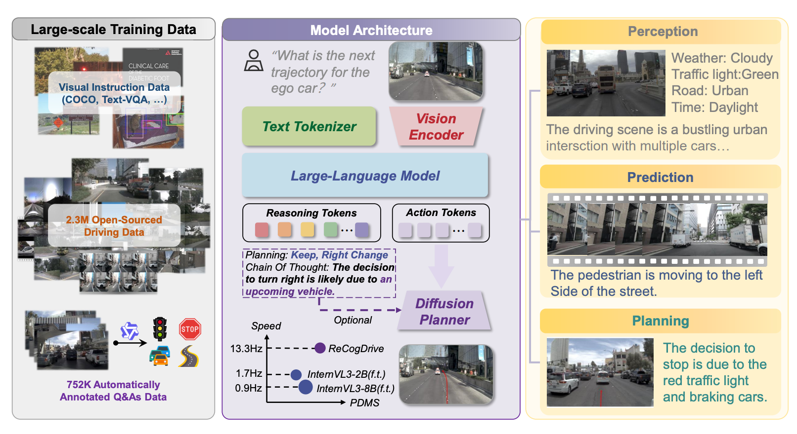
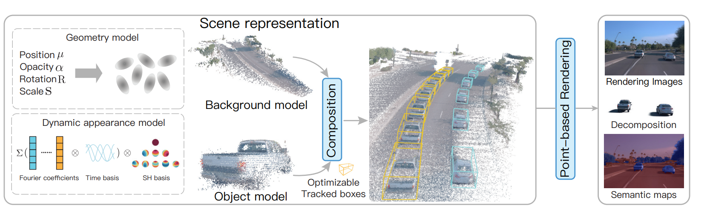
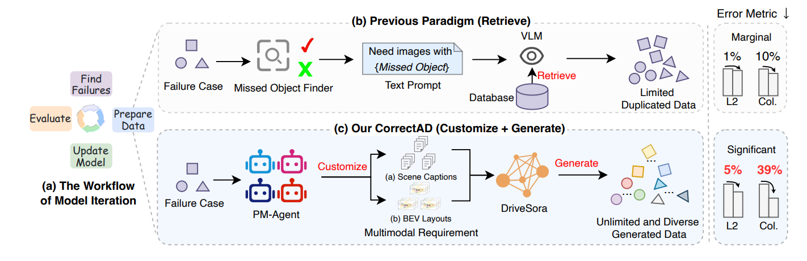
CorrectAD: A Self-Correcting Agentic System to Improve End-to-end Planning in Autonomous Driving
AAAI 2026
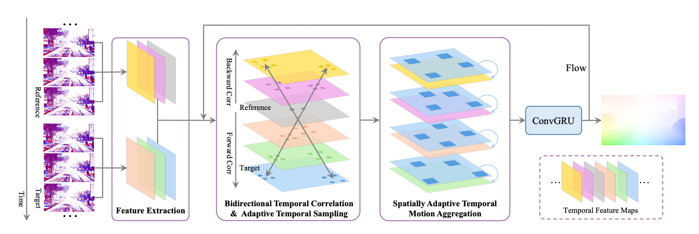
BAT: Learning Event-based Optical Flow with Bidirectional Adaptive Temporal Correlation
AAAI 2026
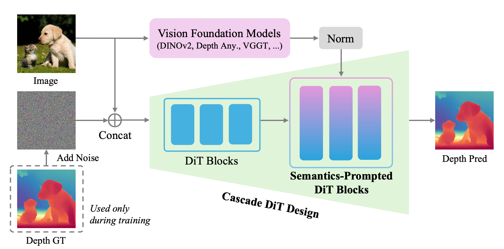
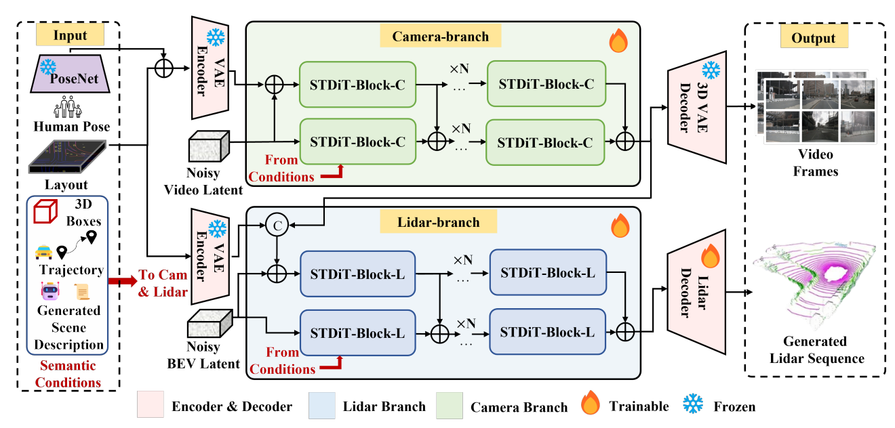
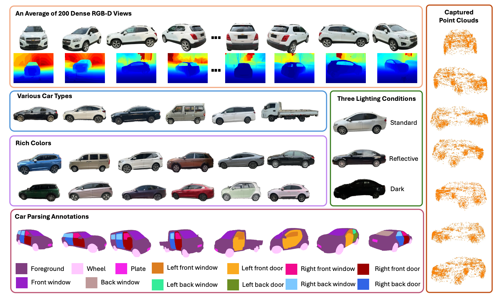
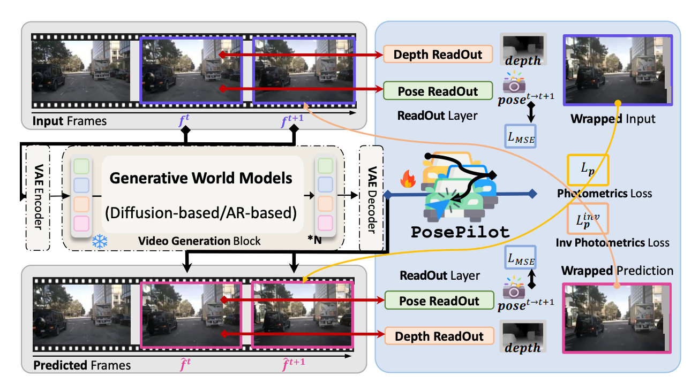
PosePilot: Steering Camera Pose for Generative World Models with Self-supervised Depth
IROS 2025
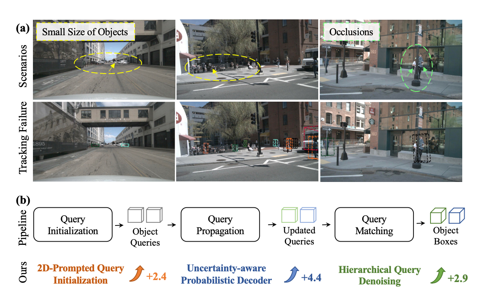
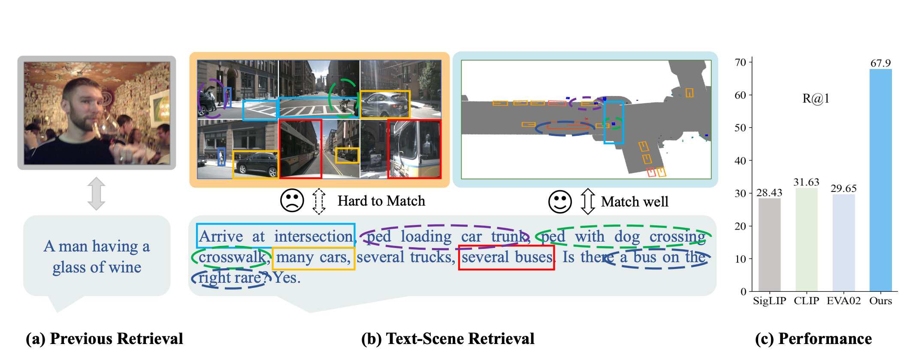
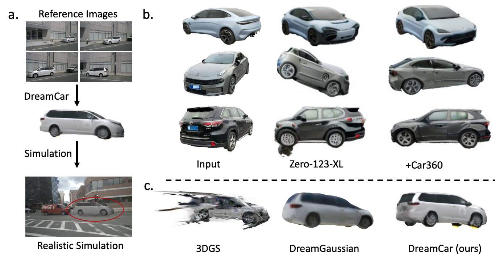
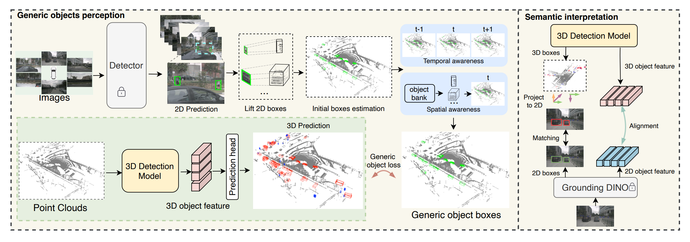
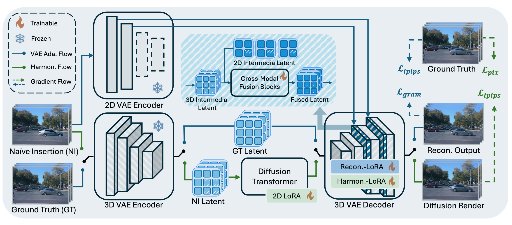
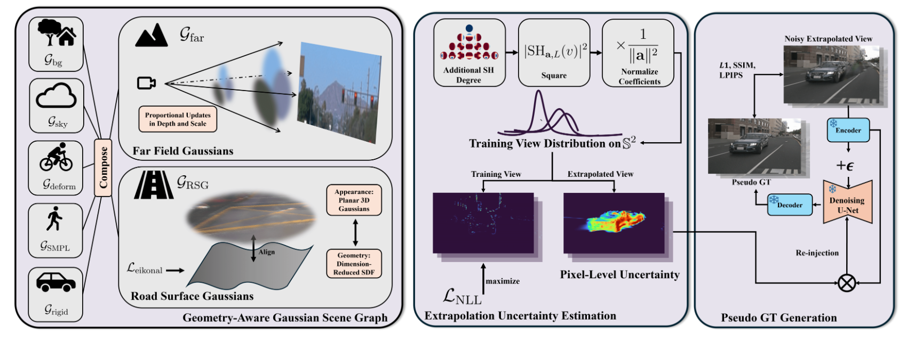
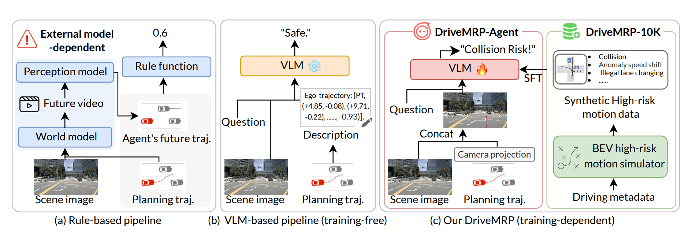
DriveMRP: Enhancing Vision-Language Models with Synthetic Motion Data for Motion Risk Prediction
arXiv, 2025
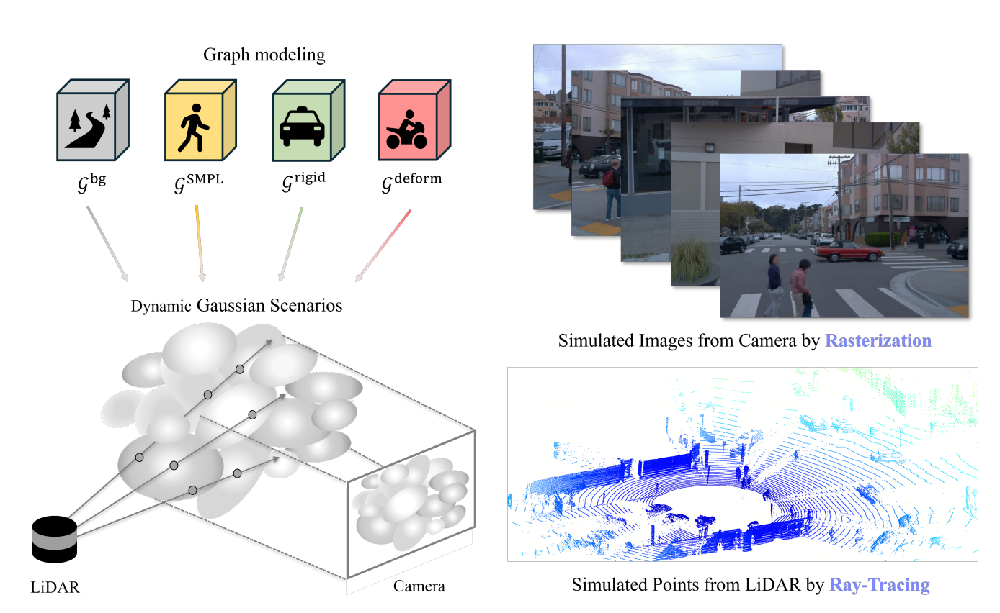
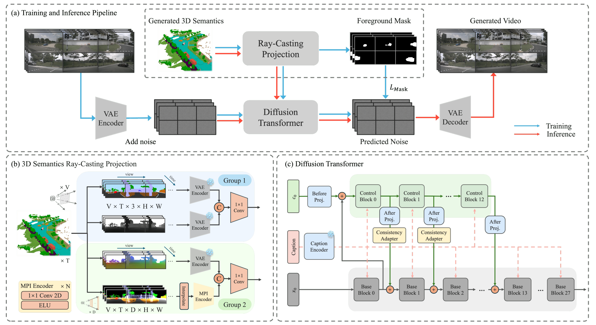
Cogen: 3d consistent video generation via adaptive conditioning for autonomous driving
arXiv, 2025